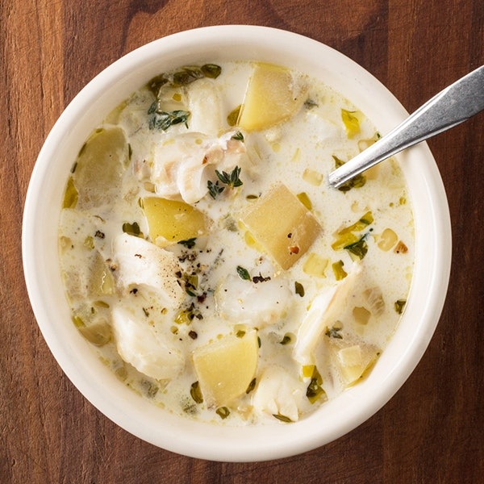

Fish Chowder

Easy from-scratch fish chowder. Recipe by Lyn from Baja.
Ingredients
- 1/2 cup each chopped celery, onion and green pepper
- 1 garlic clove, minced
- 3 tablespoons butter
- 1 can (14-1/2 ounces) chicken broth
- 1 cup uncooked diced peeled potatoes
- 1 cup shredded carrots
- 1-1/2 teaspoons salt
- 1/2 teaspoon pepper
- 1/4 to 3/4 teaspoon dill weed
- ½ cup corn cut off thee cob
- 2 cups half-and-half cream
- 1-3/4 to 2 cups marlin chunks or other fish
Instructions
- Add all the ingredients except the cream and fish together and cook until done.
- Add the cream and marlin and cook another 15 minutes.